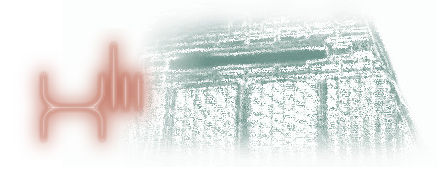

Xlii (Pronounced System 42) is an Operating System targetted for hobbyists who wish to hack & tinker on 'less than usual, mid-level' projects. Mid level is a case where code running on some architecture cannot cleanly be considered neither high level nor low level.